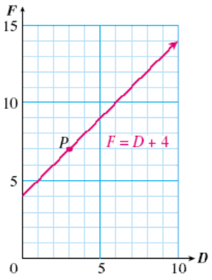
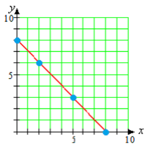
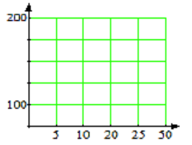

A graph has two axes, horizontal and vertical, and the values for the variables are displayed along the axes. The first, or input, variable is displayed on the horizontal axis. The second, or output, variable is displayed on the vertical axis.
Section 1.3 Equations and Graphs
¶Subsection Anatomy of a Graph
We use equations to express the relationship between two variabes. A graph is a way of visualizing an equation.
The graph itself shows how the two variables are related.
Example 1.17
The graph below shows the relationship between Delbert's age, \(D\text{,}\) and Francine's age, \(F\text{.}\) Write an equation for Francine's age in terms of Delbert's age.

Solution
From the table, we see that the value of \(F\) is always 4 more than the value of \(D\text{.}\) Thus, Francine is exactly four years older than Delbert, or \(F=D+4\text{.}\)
In this graph, \(D\) is the input variable and \(F\) is the output variable. We make a table of values by reading points on the graph.
| \(D\) | \(0\) | \(2\) | \(\alert{3}\) | \(4\) | \(6\) | \(9\) |
| \(F\) | \(4\) | \(6\) | \(\alert{7}\) | \(8\) | \(10\) | \(13\) |
Subsubsection Reading Questions
1
A is a way of visualizing an algebraic equation.
Answer
graph
2
The values of the variables are displayed on the .
Answer
axes
3
The input variable is located on the axis.
Answer
horizontal
Each point on a graph has two coordinates, which designate the position of the point. For example, the point labeled \(P\) in Example 1 has horizontal coordinate 3 and vertical coordinate 7.
In Example 1 above, we write the coordinates of point \(P\) inside parentheses as an ordered pair: \((3,7)\text{.}\) The order of the coordinates makes a difference. We always list the horizontal coordinate first, then the vertical coordinate.
Subsubsection Reading Questions
4
The position of a point on the graph is given by its .
Answer
coordinates
5
The notation \((x,y)\) is called .
Answer
an ordered pair
6
In an ordered pair, we always list the coordinate first.
Answer
horizontal
Look Closer
How does the graph illustrate the equation \(F=D+4\text{?}\) The coordinates of each point on the graph are values for \(D\) and \(F\) that make the equation true. The coordinates of the point \(P\text{,}\) namely \(D=3\) and \(F=7\text{,}\) represent the fact that when Delbert was 3 years old, Francine was 7 years old. If we substitute these values into our equation we get \begin{align*} F \amp = D+4\\ \alert{7} \amp = \alert{3}+4 \end{align*} which is true.
An ordered pair that makes an equation true is called a solution of the equation. Each point on the graph represents a solution of the equation.
Checkpoint 1.18
- Locate on the graph each of the ordered pairs listed in the table above, and make a dot there. Label each point with its coordinates.
- By substituting its coordinates into the equation, verify that each point you labeled in part (a) represents a solution of the equation \(F=D+4\text{.}\)
Subsubsection Reading Questions
7
An ordered pair whose coordinates make the equation true is called a of the equation.
Answer
solution
Subsection Graphing an Equation
The simplest way to draw a graph for an equation is to make a table of values and plot the points.
Example 1.19
Graph the equation \(y=8-x\text{.}\)
Solution
Each ordered pair \((x,y)\) represents a point on the graph of the equation. We plot the points on the grid and connect them with a smooth curve, as shown above.
In this equation, \(x\) is the input variable and \(y\) is the output variable. We choose several values for \(x\) and use the equation to find the corresponding values for \(y\text{.}\)
| \(x\) | Calculation | \(y\) | \((x,y)\) |
| \(0\) | \(y=8-0=8\) | \(8\) | \((0,8)\) |
| \(2\) | \(y=8-2=6\) | \(6\) | \((2,6)\) |
| \(5\) | \(y=8-5=3\) | \(3\) | \((5,3)\) |
| \(8\) | \(y=8-8=0\) | \(0\) | \((8,0)\) |

Subsection Choosing Scales for the Axes
If the variables in an equation have very large (or very small) values, we must choose scales for the axes that fit these values.
Example 1.20
Graph the equation \(y=250+x\text{.}\)
Solution

To graph this equation, we choose multiples of 50 for the \(x\)-values.
| \(x\) | Calculation | \(y\) | \((x,y)\) |
| \(0\) | \(y=250+0=250\) | \(250\) | \((0,250)\) |
| \(50\) | \(y=250+50=300\) | \(300\) | \((50, 300)\) |
| \(100\) | \(y=250+100=350\) | \(350\) | \((100, 350)\) |
| \(200\) | \(y=250+200=450\) | \(450\) | \((200, 450)\) |
The largest \(y\)-value in the table is 450, so we scale the axis to a little larger than 450, say, 500. We plot the ordered pairs to obtain the graph shown above.
Look Closer
How do we know what scales to use on the axes? For most graphs, it is best to have between ten and twenty tick marks on each axis, or the graph will be hard to read. We choose intervals of convenient size for the particular problem, such as 5, 10, 25, 100, or 1000. It is not necessary to use the same scale on both axes
Caution 1.21
It is important that the scales on the axes be evenly spaced. Each tick mark must represent the same interval. The scales on the graph below are incorrectly labeled.
\(\blert{\text{Incorrect!}~~~ \rightarrow}\)

Subsection Solving Equations with Graphs
In Example 1 we showed a graph of the equation
\begin{equation*}
F=D+4
\end{equation*}
which gives Francine's age, \(F\text{,}\) in terms of Delbert's age, \(D\text{.}\) We can use the graph to answer two types of questions about the equation \(F=D+4\text{:}\)
- Given a value of \(D\text{,}\) find the corresponding value of \(F\text{.}\)
- Given a value of \(F\text{,}\) find the corresponding value of \(D\text{.}\)
The first of these tasks is another way of evaluating the algebraic expression \(D+4\text{,}\) and the second task is another way of solving an equation.
Example 1.22
- Use the graph of the equation \(F=D+4\) to evaluate the expression \(D+4\) for \(D=7\text{.}\) Verify your answer algebraically.
- Use the graph of the equation \(F=D+4\) to solve the equation \(13=D+4\text{.}\) Verify your answer algebraically.
Solution
-
We locate \(D=7\) on the horizontal axis, as shown at left below. Then we move vertically to point on the graph with \(D\)-coordinate 7. Finally, we move horizontally from point \(A\) to the vertical axis to find the \(F\)-coordinate. The coordinates of point \(A\) are \((7,11)\text{,}\) which tells us that when \(D=7,~F=11\text{.}\) Our answer is 11.
To verify the answer algebraically, we evaluate the expression for \(D=7\text{:}\) we substitute \(\alert{7}\) for \(D\) into the equation:
\begin{equation*} F=D+4=\alert{7}+4=11 \end{equation*}

-
We locate \(F=13\) on the vertical axis. We move horizontally to point \(B\) on the graph shown above right, with \(F\)-coordinate 13. From point \(B\text{,}\) we move vertically to the horizontal axis to find the \(D\)-coordinate. The coordinates of point \(B\) are \((9,13)\text{,}\) which tells us that when \(F=13,~D=9\text{.}\) Our answer is 9.
To verify the answer algebraically, we solve the equation when \(F=13\text{:}\) we subtract 4 from both sides of the equation: \begin{align*} 13 \amp = D+4 \amp\amp \blert{\text{Subtract 4 from both sides.}}\\ \blert{-4} \amp ~~~~~~~~~\blert{-4}\\ 9 \amp = D \end{align*}
Example 1.23
Here is a graph of
\begin{equation*}
y=1.5x
\end{equation*}
Use the graph to solve the equation \(1.5x=3.75\text{.}\)

Solution The \(x\)-coordinate of this point is 2.5, so the ordered pair \((2.5, 3.75)\) is a solution of the equation \(y=1.5x\text{,}\) and \(x=2.5\) is the solution of the equation \(1.5x=3.75\text{.}\)
The \(x\)-coordinate of this point is 2.5, so the ordered pair \((2.5, 3.75)\) is a solution of the equation \(y=1.5x\text{,}\) and \(x=2.5\) is the solution of the equation \(1.5x=3.75\text{.}\)
By comparing the equation of the graph with the equation we want to solve, we see that \(y\) has been replaced by \(\alert{3.75}\text{.}\) \begin{align*} y \amp = 1.5x\\ \downarrow \amp \\ \alert{3.75} \amp = 1.5x \end{align*} We locate 3.75 on the \(y\)-axis, then find the point on the graph with \(y\)-coordinate 3.75.
Subsubsection Reading Questions
8
The graph of an equation is a picture of its .
Answer
solutions
9
To solve an equation using a graph, we start on the axis.
Answer
vertical
Subsection Skills Warm-Up
Subsubsection Exercises
In Exercises 1–2, what value corresponds to each labeled point?
1

2

3
- Label the axis.

- On the axis in part (a), plot 1400 and 8350.
4
- Label the axis below with 16 tick marks (not counting zero), the highest being 800.

- On the axis in part (a), plot 132 and 614.
5
- Label an axis in increments of 40,000 from 0 to 600,000.
- On your axis, plot 250,000 and 472,600.
6
- Label an axis in increments of 0.5 from 0 to 5.
- On the axis in part (a), plot 1.3 and 3.77.